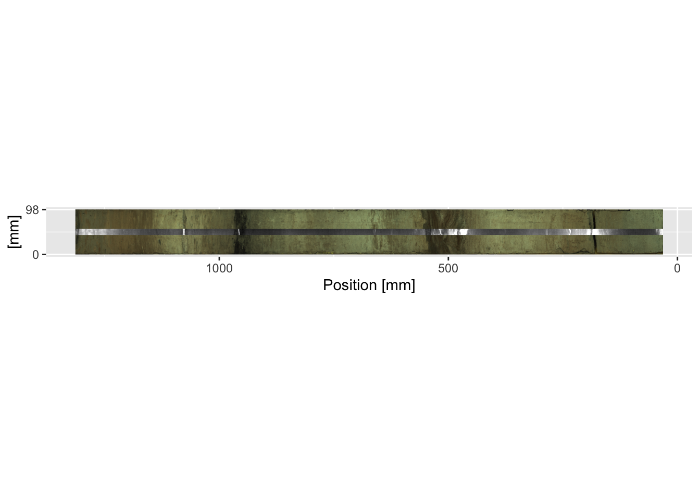

4.2 Plotting Images
The package itraxR provides functions for importing and creating basic plots of both the photographic and radiographic images. For the optical images, it is almost always necessary to trim the image to the extent of the actual scan, or extraneous image is included (e.g. the calibration card in the example shown below). The function itraxR::itrax_image() allows the extent of the scan to be defined, or extracted from the metadata. In the example below, trim = FALSE forces the whole image to be shown. When dealing with high aspect ratio images like these, it is often useful to use svgPanZoom::svgPanZoom() instead of print() to view the output.
myImage <- itrax_image(file = "CD166_19_S1/CD166_19_S1/optical0.tif",
meta = "CD166_19_S1/CD166_19_S1/document.txt",
trim = FALSE,
plot = TRUE
)
For radiographic images the function itraxR::itrax_radiograph() can be used using an identical syntax as itraxR::itrax_image(). Often the contrast needs to be adjusted, so a contrast-adjusted radiograph is supplied in the example data (radiograph0.tif).
myRadio <- itrax_radiograph(file = "CD166_19_S1/CD166_19_S1_RAD/radiograph0.tif",
meta = "CD166_19_S1/CD166_19_S1_RAD/document.txt",
plot = TRUE
)
The simple plots generated as a side effect of these functions are sometimes sufficient for simple plots, but for more complex diagrams you will need to generate them from scratch. For example, it is often desirable to overplot the radiograph on the optical image. The code below does this. Note the calculations made for the xmin = and ymin = parameters for annotation_custom() when adding the radiograph rasterGrob(); these correctly position the radiograph along the centre of the image.
ggplot() +
scale_y_reverse(limits = rev(range(as.numeric(row.names(myImage$image))))) +
scale_x_continuous(breaks = round(range(as.numeric(colnames(myImage$image))), 0),
limits = range(as.numeric(colnames(myImage$image)))) +
labs(y = "Position [mm]", x = "[mm]") +
annotation_custom(rasterGrob(myImage$image,
width = unit(1, "npc"),
height = unit(1, "npc")),
ymax = max(as.numeric(row.names(myImage$image)))/-1,
ymin = min(as.numeric(row.names(myImage$image)))/-1,
xmin = min(as.numeric(colnames(myImage$image))),
xmax = max(as.numeric(colnames(myImage$image)))
) +
annotation_custom(rasterGrob(myRadio$image,
width = unit(1, "npc"),
height = unit(1, "npc")),
ymax = max(as.numeric(row.names(myRadio$image)))/-1,
ymin = min(as.numeric(row.names(myRadio$image)))/-1,
xmin = mean(as.numeric(colnames(myImage$image))) - mean(as.numeric(colnames(myRadio$image))),
xmax = mean(as.numeric(colnames(myImage$image))) + mean(as.numeric(colnames(myRadio$image)))
) +
coord_fixed(ratio = 1)It is often desirable to combine a sequence of cores. This is trivial for cores like CD166_19 where there are no overlapping sections. However, note that the coring depth information is different from the position that these images are referenced to. The coring depth is not contained in any of the Itrax metadata, and should be recorded elsewhere, whereas position refers to the coordinates on the Itrax core holder. In the code below the depth information is extracted from the combined XRF data created in a previous chapter (for example using max(CD166_19[which(CD166_19$label == "S2"),]$depth) to get the maximum depth of the middle section. The radiographs can be added in the same fashion as the previous example.
ggplot() +
scale_y_reverse(limits = rev(range(CD166_19_xrf$depth))) +
scale_x_continuous(breaks = round(range(as.numeric(colnames(CD166_19_S1$image$image))), 0),
limits = range(as.numeric(colnames(CD166_19_S1$image$image)))) +
coord_fixed(ratio = 1) +
labs(y = "Depth [mm]", x = "[mm]") +
annotation_custom(rasterGrob(CD166_19_S1$image$image,
width = unit(1, "npc"),
height = unit(1, "npc")),
ymax = max(CD166_19_S1$xrf$depth)/-1,
ymin = min(CD166_19_S1$xrf$depth)/-1,
xmin = min(as.numeric(colnames(CD166_19_S1$image$image))),
xmax = max(as.numeric(colnames(CD166_19_S1$image$image)))
) +
annotation_custom(rasterGrob(CD166_19_S2$image$image,
width = unit(1, "npc"),
height = unit(1, "npc")),
ymax = max(CD166_19_S2$xrf$depth)/-1,
ymin = min(CD166_19_S2$xrf$depth)/-1,
xmin = min(as.numeric(colnames(CD166_19_S2$image$image))),
xmax = max(as.numeric(colnames(CD166_19_S2$image$image)))
) +
annotation_custom(rasterGrob(CD166_19_S3$image$image,
width = unit(1, "npc"),
height = unit(1, "npc")),
ymax = max(CD166_19_S3$xrf$depth)/-1,
ymin = min(CD166_19_S3$xrf$depth)/-1,
xmin = min(as.numeric(colnames(CD166_19_S3$image$image))),
xmax = max(as.numeric(colnames(CD166_19_S3$image$image)))
)
Where there are overlaps it is often desirable to plot the cores adjacent to one another. It is simply a case of adjusting the xmin = and xmax = parameters in the annotation_custom() function for every other section. In this context the x-axis labels become largely meaningless and can be omitted.
ggplot() +
scale_y_reverse(limits = rev(range(CD166_19_xrf$depth))) +
scale_x_continuous(breaks = round(c(0, max(as.numeric(colnames(CD166_19_S2$image$image)))*2)),
limits = c(0, max(as.numeric(colnames(CD166_19_S2$image$image)))*2)) +
coord_fixed(ratio = 1) +
labs(y = "Depth [mm]", x = "[mm]") +
annotation_custom(rasterGrob(CD166_19_S1$image$image,
width = unit(1, "npc"),
height = unit(1, "npc")),
ymax = max(CD166_19_S1$xrf$depth)/-1,
ymin = min(CD166_19_S1$xrf$depth)/-1,
xmin = min(as.numeric(colnames(CD166_19_S1$image$image))),
xmax = max(as.numeric(colnames(CD166_19_S1$image$image)))
) +
annotation_custom(rasterGrob(CD166_19_S2$image$image,
width = unit(1, "npc"),
height = unit(1, "npc")),
ymax = max(CD166_19_S2$xrf$depth)/-1,
ymin = min(CD166_19_S2$xrf$depth)/-1,
xmin = max(as.numeric(colnames(CD166_19_S2$image$image))),
xmax = max(as.numeric(colnames(CD166_19_S2$image$image)))*2
) +
annotation_custom(rasterGrob(CD166_19_S3$image$image,
width = unit(1, "npc"),
height = unit(1, "npc")),
ymax = max(CD166_19_S3$xrf$depth)/-1,
ymin = min(CD166_19_S3$xrf$depth)/-1,
xmin = min(as.numeric(colnames(CD166_19_S3$image$image))),
xmax = max(as.numeric(colnames(CD166_19_S3$image$image)))
)
Note that omitting the line coord_fixed(ratio = 1) allows the aspect ratio of the plot to be reshaped. Although usually it is desirable to keep the plot in the correct shape, sometimes for very long sequences the images end up so narrow as to be quite useless, so the x-axis can be stretched to accentuate the features in it. The example below simply omits the coord_fixed() line from the previous example.

For lengthy sequences, the repetition of the annotation_custom() block of code is inefficient, but it can be easily placed inside a function. The functions ggItraxImage() and ggItraxRadio() shown below allow this, but they might need small modifications depending on your data structure and the desired output.
ggItraxImage <- function(section, xposition){
if(xposition == "l"){
annotation_custom(rasterGrob(section$image$image,
width = unit(1, "npc"),
height = unit(1, "npc")),
ymax = max(section$xrf$depth)/-1,
ymin = min(section$xrf$depth)/-1,
xmin = min(as.numeric(colnames(section$image$image))),
xmax = max(as.numeric(colnames(section$image$image)))
)} else if(xposition == "r"){
annotation_custom(rasterGrob(section$image$image,
width = unit(1, "npc"),
height = unit(1, "npc")),
ymax = max(section$xrf$depth)/-1,
ymin = min(section$xrf$depth)/-1,
xmin = max(as.numeric(colnames(section$image$image))),
xmax = max(as.numeric(colnames(section$image$image)))*2)
} else{stop("Specify `l`eft or `r`ight for the image.")}
}
ggItraxRadio <- function(section, xposition){
if(xposition == "l"){
annotation_custom(rasterGrob(section$radiograph$image,
width = unit(1, "npc"),
height = unit(1, "npc")),
ymin = min(section$xrf$depth)/-1,
ymax = max(section$xrf$depth)/-1,
xmin = mean(as.numeric(colnames(section$image$image))) -
mean(as.numeric(colnames(section$radiograph$image))),
xmax = mean(as.numeric(colnames(section$image$image))) +
mean(as.numeric(colnames(section$radiograph$image)))
)
} else if(xposition == "r"){
annotation_custom(rasterGrob(section$radiograph$image,
width = unit(1, "npc"),
height = unit(1, "npc")),
ymin = min(section$xrf$depth)/-1,
ymax = max(section$xrf$depth)/-1,
xmin = max(as.numeric(colnames(section$image$image))) +
mean(as.numeric(colnames(section$image$image))) -
mean(as.numeric(colnames(section$radiograph$image))),
xmax = max(as.numeric(colnames(section$image$image))) +
mean(as.numeric(colnames(section$image$image))) +
mean(as.numeric(colnames(section$radiograph$image)))
)
} else(stop("Specify `l`eft or `r`ight for the radiograph."))
}Recall that ggplot objects can be saved and recalled rather than immediately printed. Let us take the plot generated in a previous example, but assign it using imagePlot <- ggplot() + ..., whilst also using our newly created functions to shorten the code.
imagePlot <- ggplot() +
scale_y_reverse(limits = rev(range(CD166_19_xrf$depth))) +
scale_x_continuous(breaks = round(c(0, max(as.numeric(colnames(CD166_19_S1$image$image)))*2)),
limits = c(0, max(as.numeric(colnames(CD166_19_S1$image$image)))*2)) +
labs(y = "Depth [mm]", x = "[mm]") +
ggItraxImage(CD166_19_S1, "l") +
ggItraxImage(CD166_19_S2, "r") +
ggItraxImage(CD166_19_S3, "l")The radiographs can be added afterwards without starting from scratch. We can also modify plot parameters, for example, the x-axis labels can be removed.
imagePlot <- imagePlot +
ggItraxRadio(CD166_19_S1, "l") +
ggItraxRadio(CD166_19_S2, "r") +
ggItraxRadio(CD166_19_S3, "l") +
theme(axis.title.x=element_blank(),
axis.text.x=element_blank(),
axis.ticks.x=element_blank())
print(imagePlot + coord_fixed(ratio = 1))
Finally, it may be necessary to plot the images horizontally rather than the more traditional vertical plots often used in down-core data presentation. aperm() and t() may be used for the optical and radiographic images respectively to transpose the x- and y-coordinates, but the images will need to be mirrored (using []) so that the tops of the sections are on the right-hand side and the graphs run from oldest to youngest when read left-to-right, in the generally accepted order of these types of graph. For the example below, this is achieved in the first and second lines for the optical and radiographic images respectively.
mySidewaysImage <- aperm(CD166_19_S1$image$image, c(2,1,3))[, dim(aperm(CD166_19_S1$image$image, c(2,1,3)))[2]:1, ]
mySidewaysRadio <- t(CD166_19_S1$radiograph$image)[, dim(t(CD166_19_S1$radiograph$image))[2]:1]
ggplot() +
scale_x_reverse(limits = rev(range(as.numeric(colnames(mySidewaysImage))))) +
scale_y_continuous(breaks = round(range(as.numeric(row.names(mySidewaysImage))), 0),
limits = range(as.numeric(row.names(mySidewaysImage)))) +
labs(y = "[mm]", x = "Position [mm]") +
annotation_custom(rasterGrob(mySidewaysImage,
width = unit(1, "npc"),
height = unit(1, "npc")),
xmax = max(as.numeric(colnames(mySidewaysImage)))/-1,
xmin = min(as.numeric(colnames(mySidewaysImage)))/-1,
ymin = min(as.numeric(row.names(mySidewaysImage))),
ymax = max(as.numeric(row.names(mySidewaysImage)))
) +
annotation_custom(rasterGrob(mySidewaysRadio,
width = unit(1, "npc"),
height = unit(1, "npc")),
xmax = max(as.numeric(colnames(mySidewaysRadio)))/-1,
xmin = min(as.numeric(colnames(mySidewaysRadio)))/-1,
ymin = mean(as.numeric(row.names(mySidewaysImage))) - mean(as.numeric(row.names(mySidewaysRadio))),
ymax = mean(as.numeric(row.names(mySidewaysImage))) + mean(as.numeric(row.names(mySidewaysRadio)))
) +
coord_fixed(ratio = 1)